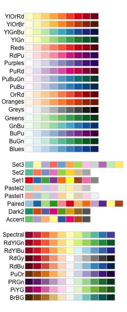

Antes de comenzar, lee la página sobre los conceptos básicos de visualización con ggplot e instala el paquete ggplot2.
library(ggplot2)
En estos ejemplos, utilizaremos un conjunto de datos que ya está en R con la longitud y el ancho de partes florales de tres especies de iris. Primero, carga el conjunto de datos:
data(iris)Los siguientes gráficos se utilizarán como código base a lo largo de este tutorial:
* Un gráfico de dispersión de longitud de pétalo vs. longitud de sépalo
* Un diagrama de caja de longitud de sépalo vs. especies
* Un histograma de frecuencia de longitud de sépalo
IrisPlot <- ggplot(iris, aes(Sepal.Length, Petal.Length)) +
geom_point()
IrisBox <- ggplot(iris, aes(Species, Sepal.Length, fill = Species)) +
geom_boxplot()
IrisHist <- ggplot(iris, aes(Sepal.Length)) +
geom_histogram()
Para colorear todo tu gráfico de un solo color, agrega fill = "color" o colour = "color" dentro de los corchetes siguientes al código geom_... donde especificaste qué tipo de gráfico quieres.
Ten en cuenta que para la mayoría de los gráficos, fill = "color" coloreará toda la forma, mientras que colour = "color" coloreará el contorno.
Por ejemplo, para hacer un diagrama de caja azul con un contorno rojo, o un histograma amarillo con un contorno verde:
IrisBox <- ggplot(iris, aes(Species, Sepal.Length)) +
geom_boxplot(fill = "blue", colour = "red")
IrisHist <- ggplot(iris, aes(Sepal.Length)) +
geom_histogram(fill = "yellow", colour = "green")
Para gráficos de dispersión, colour = "color" especificará el color de relleno para la forma del punto.
IrisPlot <- ggplot(iris, aes(Petal.Length, Sepal.Length)) +
geom_point(colour = "red")
La paleta básica de colores puede ser revisada aquí. Recuerda incluir “” antes y después del nombre del color.
Variables categóricas adicionales
Si deseas colorear los puntos de un gráfico de dispersión según una tercera variable categórica, agrega colour = nombre_variable como argumento dela función aes. Esto le indica a ggplot que esta tercera variable coloreará los puntos. Para colorear los puntos según la variable Species:
IrisPlot <- ggplot(iris, aes(Petal.Length, Sepal.Length, colour = Species)) +
geom_point()
Para colorear el diagramas de caja o el gráficos de barras según una variable categórica dada, utiliza fill = nombre_variable en lugar de colour.
IrisBox <- ggplot(iris, aes(Species, Sepal.Length, fill = Species)) +
geom_boxplot()
Variables continuas adicionales
El formato básico para colorear una variable continua es muy similar al de una variable categórica. La única diferencia real es que debes usar + scale_colour_gradient(low = "color1", high = "color2"). Las otras escalas de color no funcionarán, ya que son para variables categóricas. Por ejemplo, aquí tienes un gráfico de longitud del sépalo vs. longitud del pétalo, con los símbolos coloreados según su valor de ancho del sépalo.
IrisPlot.continuous <- ggplot(iris, aes(Petal.Length, Sepal.Length, colour = Sepal.Width)) +
geom_point()
print(IrisPlot.continuous)
Para hacer el degradado más efectivo, especifica dos colores dentro de los corchetes + scale_colour_gradient que representen los extremos del degradado. Por ejemplo:
print(IrisPlot.continuous + scale_colour_gradient(low = "black", high = "white"))
print(IrisPlot.continuous + scale_colour_gradient(low = "darkolivegreen1", high = "darkolivegreen"))
Esto se puede hacer de varias formas. El formato básico consiste en agregar + scale_colour_...() para gráficos de dispersión o + scale_fill_...() para diagramas de cajas al código donde “imprimes” tu gráfico, donde ...() es una de varias opciones. La sintaxis es:
print(tu.grafico.basico + scale_colour_...())
Hay varias opciones para la parte + scale_colour_...().
Selección individual de colores. Para elegir colores manualmente, puedes usar + scale_colour_manual() o + scale_fill_manual(). Por ejemplo, para elegir tres colores para los gráficos de iris:
print(IrisPlot + scale_colour_manual(values = c("Blue", "Red", "Green")))
print(IrisBox + scale_fill_manual(values = c("Black", "Orange", "Brown")))
Asignar tonos en una escala de grises. Utiliza + scale_colour_grey() o + scale_fill_grey()
print(IrisPlot + scale_colour_grey())
print(IrisBox + scale_fill_grey())
Asignación de colores desde una paleta predefinida. Utiliza + scale_colour_brewer() o + scale_fill_brewer(). Para hacer esto, deberás instalar el paquete RColorBrewer y cargarlo en R.
library(RColorBrewer)
Esto se puede agregar al final del código de tu gráfico, al igual que los otros + scale_colour_brewer(palette = "nombre_de_la_paleta") para gráficos de dispersión y + scale_fill_brewer(palette = "nombre_de_la_paleta") para diagramas de caja, donde "nombre_de_la_paleta" es una de las paletas disponibles. Por ejemplo,
print(IrisPlot + scale_colour_brewer(palette = "Dark2"))
print(IrisBox + scale_fill_brewer(palette = "Oranges"))
En un gráfico de dispersión simple sin variables de agrupamiento, puedes cambiar la forma del símbolo agregando shape = ? al código de geom_point(), donde ? es uno de los siguientes números para diferentes formas.

Por ejemplo, para usar un triángulo relleno,
IrisPlot <- ggplot(iris, aes(Petal.Length, Sepal.Length)) +
geom_point(shape = 17)
Se pueden usar diferentes símbolos para agrupar datos en un gráfico de dispersión. Esto puede ser muy útil al imprimir en blanco y negro o para distinguir aún más tus categorías.
Para hacer esto, debes agregar shape = nombre_variable dentro de los corchetes de aes de tu gráfico básico, donde nombre_variable es el nombre de tu variable de agrupamiento. Por ejemplo, para tener diferentes símbolos para cada especie, usaríamos.
IrisPlot.shape <- ggplot(iris, aes(Petal.Length, Sepal.Length, shape = Species)) +
geom_point()
Para establecer los símbolos manualmente, podemos utilizar los códigos de símbolo en scale_shape_manual() agregados a tu función de impresión.
print(IrisPlot.shape + scale_shape_manual(values = c(0, 16, 3)))
Esto se puede usar junto con el color para distinguir y agrupar aún más tus variables.
IrisPlot.shape <- ggplot(iris, aes(Petal.Length, Sepal.Length, shape = Species, colour = Species)) +
geom_point()
print(IrisPlot.shape + scale_shape_manual(values = c(0, 16, 3)) + scale_colour_manual(values = c("chartreuse4", "chocolate", "slateblue4")))
Para personalizar aún más la estética del gráfico, incluyendo el color y el formato, consulta nuestras otras páginas de ayuda de ggplot: * Modificando la apariencia general. * Agregando títulos y nombres de ejes.
Puedes encontrar ayuda sobre todas las funciones de ggplot en el sitio principal de ayuda de ggplot.
Puedes descargar una hoja de ayuda útil con funciones comúnmente utilizadas aquí.
Chang, W (2012) R Graphics cookbook. O’Reilly Media. - una guía sobre ggplot con bastante ayuda en línea aquí
Autor: Fiona Robinson
Año: 2016
Última actualización: Jun. 2023